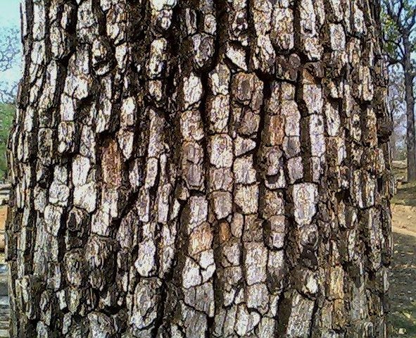

तेंदूTendu
Diospyros melanoxylon · Ebenaceae · FLR-0162

- Scientific nameवैज्ञानिक नाम
- Diospyros melanoxylon Roxb.
- Familyकुल
- Ebenaceae
- Hindiहिंदी
- तेंदू
- Local namesस्थानीय नाम
- tendu, temru, timru, ebony, ebony tree, coromandel ebony
- Status hereयहाँ की स्थिति
- native
- Movementआवागमन
- Resident, here all year
- IUCNIUCN
- not evaluated
- Reviewसमीक्षा
- audited and independently read
When to look कब देखें
Present all year.साल भर मौजूद।
Uses and possibilities उपयोग और संभावनाएँ
Drawn from the documented uses in the profile below, where each is labelled traditional, current or a research lead. All uses →
Tell it apart from इनसे अलग पहचानें
तेंदू / Tendu
Diospyros melanoxylon Roxb. — Ebenaceae
तेंदू — वह पेड़ जिसकी पत्ती बीड़ी बनाने में काम आती है। काली लकड़ी वाला। फूल हल्के पीले-हरे, सुगंधित। फल चिपचिपा, मीठा, खट्टा, गोल। बीड़ी का काम अब भी चलता है और तेंदू की पत्तियाँ सरकार के हिसाब से इकट्ठी की जाती हैं।
Quick Identification त्वरित पहचान
| Feature | Description |
|---|---|
| Size | Deciduous tree 5–15 m tall, with a spreading crown |
| Leaves | Elliptic to ovate, 7–13 cm, entire, leathery, glossy, smooth |
| Flowers | Small, pale greenish-yellow, fragrant, flowers solitary or in pairs along the stems |
| Fruit | Globose berry, 1.5–2 cm, greenish ripening to black, very sticky pulp |
| Bark | Dark grey, fissured |
| Wood | Dark, ebony-like, hard |
| The test | The sticky, sweet fruit and smooth glossy leaves are distinctive |
Field tip: In dry deciduous forests, look for a tree with smooth, glossy leaves and small sticky black fruits in mid-summer. The leaves are highly valued and are harvested commercially for bidi production.
हिंदी — कैसे पहचानें: पेड़ मध्यम आकार का, सूखे जंगल में। पत्ती चिकनी, चमकदार, पूरी। फूल हल्के पीले, सुगंधित। फल गोल, काला, चिपचिपा, मीठा।
Morphology आकारिकी
Biometrics (cultivated and wild trees, dry deciduous forests):
| Measurement | Range |
|---|---|
| Height | 5–15 m |
| Trunk diameter | 20–60 cm |
| Leaf length | 7–13 cm |
| Leaf width | 3–7 cm |
| Flower length | 0.5–1 cm |
| Fruit diameter | 1.5–2 cm |
Trunk and bark: Straight to crooked, with dark grey, deeply fissured bark. Wood is dark, hard, ebony-like.
Leaves: Alternate, elliptic to ovate, tapering to both ends, entire, leathery, glossy above, paler beneath. Venation is prominent.
Flowers: Small, solitary or in pairs, pale greenish-yellow, fragrant, typically unisexual (male and female on separate trees).
Fruit: A globose berry 1.5–2 cm in diameter, greenish ripening to black, with a very sticky, astringent pulp containing many seeds.
हिंदी: पत्ती चिकनी, चमकदार, पूरी। लकड़ी काली, मजबूत। फूल पीले-हरे, छोटे। फल काला, गोल, बहुत चिपचिपा।
Behaviour & Ecology व्यवहार और पारिस्थितिकी
Tendu is a tree of dry deciduous and mixed forests across central India and the Gangetic plain. It is tolerant of poor soils and is drought-hardy. The flowers are fragrant and pollinated by insects in the cool season. The sticky, sweet fruit is eaten by birds and animals, which disperse the seeds. The tree is deciduous, shedding leaves in the dry season.
The leaves are harvested commercially for bidi production, a practice with significant livelihood importance in forest communities.
हिंदी: सूखे जंगलों का पेड़। पत्तियों से बीड़ी बनती है। बीड़ी का काम लोगों को रोज़गार देता है। फल पक्षियों और जानवरों को खाते हैं।
Life Cycle / Phenology जीवन चक्र
| Month / season | Event |
|---|---|
| October–January | Leaves gradually fall |
| February–March | Flowering; flowers fragrant |
| April–May | Fruit sets; young berries green |
| June–July | Fruit swells and begins to ripen |
| July–August | Fruit fully ripe; sticky, black, very sweet |
| August–September | Leaves begin to flush after rains |
| 5–7 years from seed | First fruiting |
Seeds germinate readily after rains. Lifespan reaches 50–80 years.
हिंदी: फरवरी-मार्च में फूल। गर्मी में फल। जुलाई-अगस्त में पके फल। बरसात के बाद पत्तियाँ निकलती हैं।
Associated Species / Interactions संबंधित प्रजातियाँ
- Pollinators: Insects visit the fragrant flowers.
- Frugivores: Birds and animals feed on and disperse the sticky fruit.
- Economic use: Leaves harvested for bidi production.
Pests and Diseases कीट और रोग
- Minor leaf-eating beetles.
- Scale insects on branches.
- No significant fungal diseases in dry deciduous forest settings.
Agricultural / Human Relevance कृषि प्रासंगिकता
Traditional and Ethnobotanical Use (documented uses; not medical advice):
- Fruit. Eaten fresh when ripe; the sticky pulp is astringent and sweet. Traditionally dried and stored.
- Bidi leaf production. The leaves are the primary material for hand-rolled bidi (leaf-wrapped cigarettes). Tendu leaves are harvested seasonally, dried, and sold. This is a significant source of livelihood for forest communities, particularly in central India.
Today. Tendu leaf collection is a major forest-based livelihood. Leaves are collected in bulk by forest-dependent communities and sold to bidi manufacturers. The government of India recognizes tendu as an important forest product.
Research direction (a lead, not a result). The sustainability of leaf harvest, the growth dynamics of tendu under harvest pressure, and the economics of the tendu–bidi supply chain would merit study.
हिंदी: पत्तियों से बीड़ी बनती है। बीड़ी एक रोज़गार है गाँव में। फल खट्टे-मीठे, चिपचिपे खाए जाते हैं। सूखे भी रखे जाते हैं।
Expected Locally स्थानीय रूप से अपेक्षित
Not a field record. Written from published accounts for eastern Uttar Pradesh. No confirmed local sighting yet — if you have seen it, that is what the atlas needs.
अभी तक स्थानीय पुष्टि नहीं। यह विवरण प्रकाशित स्रोतों से है, किसी अवलोकन से नहीं।
To be expected in dry deciduous woodlands and wastelands across Basti district. The glossy leaves and sticky summer fruit are search cues.
Distribution वितरण
Global range: Native to deciduous forests of South Asia from India to Myanmar.
In India: Widespread in dry deciduous forests of central and northern India.
In Uttar Pradesh: Scattered in woodlands, especially in eastern regions.
In Basti district / eastern UP: Expected in dry deciduous woodlands and wastelands.
Research Questions शोध प्रश्न
Anyone can investigate these | कोई भी इन प्रश्नों की जाँच कर सकता है
- How many tendu trees are in your nearest forest or grove, and are their leaves harvested? — Walk and document each tree.
- When and how are the leaves harvested, and how much do they yield? / पत्तियों की कटाई कब होती है और कितनी निकलती है? — Ask collectors about harvest timing and yield.
- How much do dried tendu leaves sell for in your local market, and who buys them? — Interview collectors and traders.
- Do sticky black fruits attract birds or other animals? — Watch fruiting trees in July–August.
- Are any tendu trees planted on purpose, or do they grow only wild? — Ask elders about planting history.
Similar Species मिलती-जुलती प्रजातियाँ
| Species | How to tell apart | हिंदी | |
|---|---|---|---|
| Diospyros tomentosa (black plum) | Leaves hairy, not smooth; smaller fruit; different distribution | अलग प्रजाति — रूई दार पत्ती | |
| Jamun (Syzygium cumini) | Leaves smaller, lanceolate; flowers in clusters; fruit different | जामुन — छोटी पत्ती, अलग फूल | |
| [[mango\ | Mango]] (Mangifera indica) | Leaves larger, differently shaped; white flowers in panicles; large fruit | आम — बड़ी पत्तियाँ |
Field rule: A deciduous tree with smooth, glossy, entire, leathery leaves and sticky black sweet fruit in summer, is tendu.
Taxonomy & Classification वर्गीकरण
Original description. Described by Roxburgh in 1832 in Flora Indica. The epithet melanoxylon refers to the dark (black) wood.
Subspecies. Monotypic — no subspecies are currently recognised.
Family and order placement. Ebenaceae, the ebony family, in the order Ericales. The genus Diospyros includes about 700 species of tropical and subtropical trees.
Phylogenetic notes. Diospyros melanoxylon is the type species of the genus in India and is closely related to other south Asian Diospyros species.
IUCN status rationale. Not evaluated. Widespread in deciduous forests; subject to leaf harvest, which is the primary human use.
Photo Gallery फोटो गैलरी
Photos needed आवश्यक फोटो
- [ ] Whole tree in dry season (पूरा पेड़)
- [ ] Smooth, glossy leaves (पत्तियाँ)
- [ ] Pale yellow flowers (फूल)
- [ ] Sticky black fruit (फल)
- [ ] Dark wood (लकड़ी)
- [ ] Tendu leaves being dried for bidi (बीड़ी के लिए सूखी पत्तियाँ)
No photos yet — add field photos to media/species/tendu/ and run node scripts/sync_photos.js.
References संदर्भ
- Roxburgh, W. (1832). Flora Indica, vol. 2, p. 525. Government Printing, Serampore. [original description]
- Hooker, J.D. (1882). The Flora of British India, vol. 3. L. Reeve, London.
- Kirtikar, K.R. & Basu, B.D. (1935). Indian Medicinal Plants, 2nd ed., vol. 2. Lalit Mohan Basu, Allahabad.
- Duthie, J.F. (1903). Flora of the Upper Gangetic Plain. Government Printing, Calcutta.
- Kumar, A. & Saxena, A. (1999). Tendu leaves and the bidi industry: Ecology, economics, and governance. Ecological Economics 34(2): 145–157.
- GBIF Occurrence Data — Diospyros melanoxylon, India (2026).
Source file: species/flora/trees/tendu.md